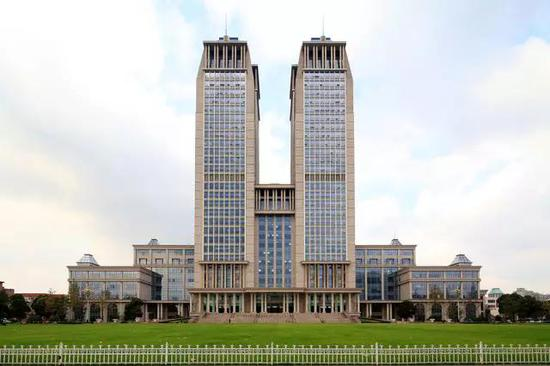
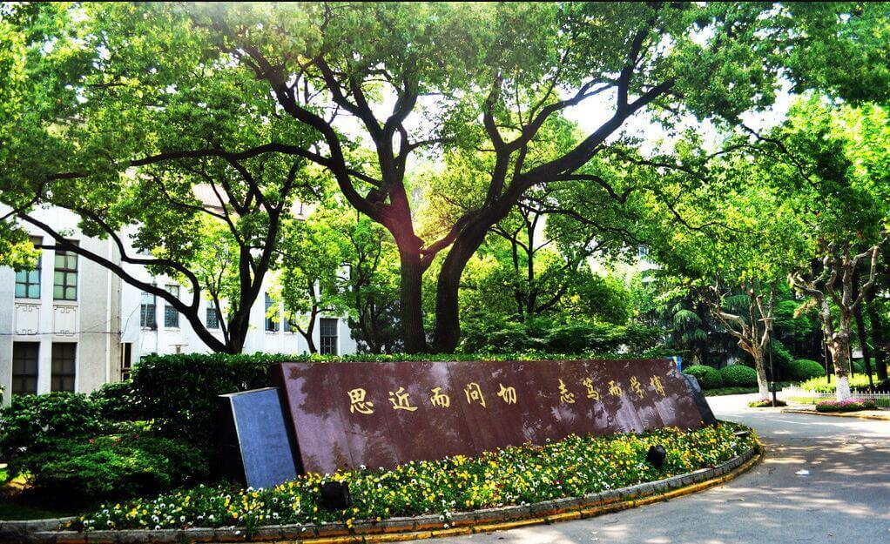
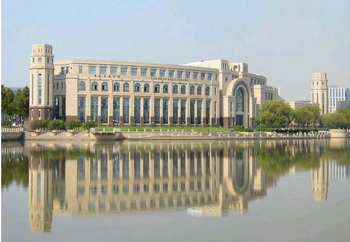
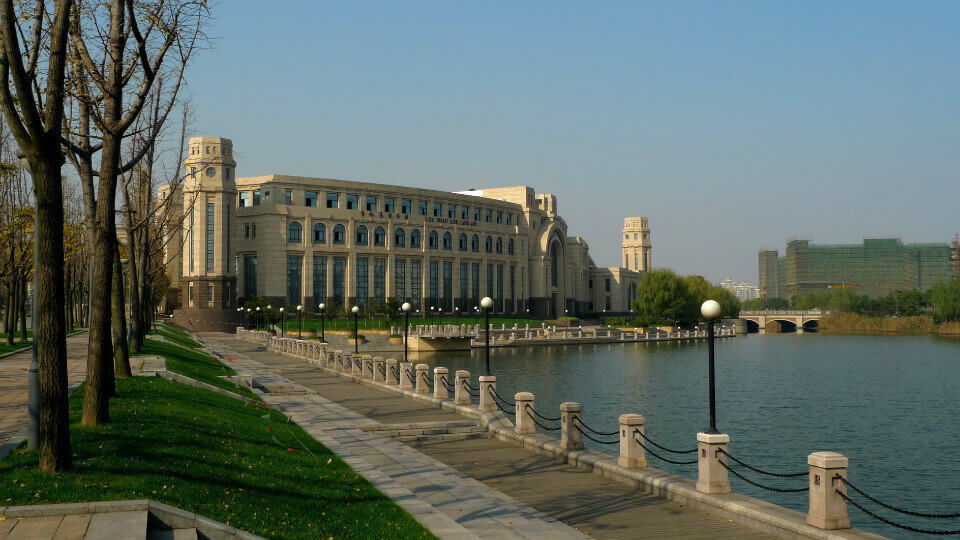
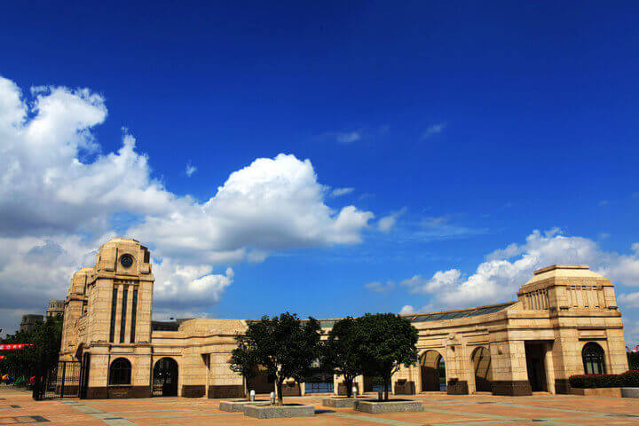
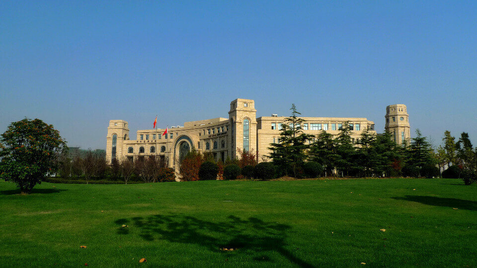

morly旅游圈
复旦大学（Fudan University），简称“复旦”，位于中国上海，由中华人民共和国教育部直属，中央直管副部级建制，位列211工程、985工程，入选双一流、“珠峰计划”、“111计划”、“2011计划”、“卓越医生教育培养计划”，为“九校联盟”成员、中国大学校长联谊会成员、东亚研究型大学协会成员、环太平洋大学协会成员、21世纪大学协会成员，是一所综合性研究型的全国重点大学。 复旦大学创建于1905年，原名复旦公学，是中国人自主创办的第一所高等院校，创始人为中国近代知名教育家马相伯，首任校董为国父孙中山。校名“复旦”二字选自《尚书大传·虞夏传》名句“日月光华，旦复旦兮”，意在自强不息，寄托当时中国知识分子自主办学、教育强国的希望。1917年复旦公学改名为私立复旦大学；1937年抗战爆发后，学校内迁重庆北碚，并于1941年改为“国立”；1946年迁回上海江湾原址；1952年全国高等学校院系调整后，复旦大学成为以文理科为基础的综合性大学；1959年成为全国重点大学。2000年，原复旦大学与原上海医科大学合并成新的复旦大学。截至2017年5月，学校占地面积244.99万平方米，建筑面积200.20万平方米。
复旦大学诞生了中国第一台质子静电加速器、第一台电子模拟计算机和第一个ALGOL-60编译器，第一台X.25分组交换机，第一套因特网监控装备、第一批真正意义上的数字电子计算机。 根据2009年资料显示：复旦大学人文科学和社会科学研究方面，在历届上海市哲学社会科学优秀成果评选中，该校的获奖等级和总数都领先，其中《中国历史地图集》、《英汉大词典》、《中国文学批评通史》获特等奖；有5项成果获2000年首届全国哲学社会科学基金规划项目优秀成果奖，其中由陆谷孙教授主编的《英汉大词典》获一等奖，是上海地区唯一的一等奖获得者。在2003年教育部中国高校第三届人文社会科学优秀研究成果奖的评比中，该校有5部著作荣获一等奖，获一等奖著作数排名全国第一。
内容整理至网络，如有侵权，请联系我们！1255394075@qq.com
  